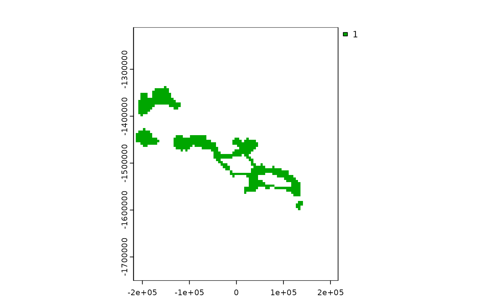
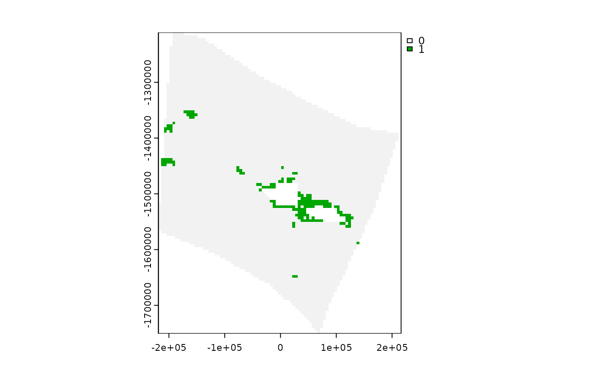

Get gridded or cropped data from input data
get_data_in_grid.RdGet gridded or cropped data from input data
Usage
get_data_in_grid(
spatial_grid = NULL,
dat = NULL,
raw = FALSE,
meth = NULL,
name = NULL,
feature_names = NULL,
antimeridian = NULL,
cutoff = 0.5
)Arguments
- spatial_grid
sforterra::rast()grid, e.g. created usingget_grid(). Alternatively, if raw data is required, ansfpolygon can be provided, e.g. created usingget_boundary(), and setraw = TRUE.- dat
sforterra::rast()data to be gridded/ cropped. Can also be a path to a file.- raw
logicalTRUE returnsdatcropped and masked/ intersected withspatial_grid. IfTRUE,spatial_gridshould be ansfpolygon.- meth
charactermethod to use for for gridding/ resampling/ reprojecting raster data. If NULL (default), function checks if data values are binary (all 0, 1, NA, or NaN) in which case method is set to "mode" for sf output or "near" for raster output. If data is non-binary, method is set to "mean" for sf output or "average" for raster output. Note that different methods are used for sf and raster asexactextractr::exact_extract()is used for gridding to sf spatial grid, whereasterra::project()/terra::resample()is used for transforming/ gridding raster data.- name
characterto name the data output; unlessfeature_namesis supplied, in which case that column is used as the feature names- feature_names
character(sfdata only) column with feature names that will be used for grouping of input data. If NULL,sfdata is assumed to represent a single features, e.g. one habitat or species.- antimeridian
logicalcan be set to true if thespatial_gridfor which data will be extracted crosses the antimeridian and the data source is in lon-lat (EPSG:4326) format. If set toNULL(default) the function will try to check if the antimeridian is crossed and set this appropriately. Note that if you are using anboundaryorspatial_gridthat crosses the antimeridian and have data that is not in lon-lat- cutoff
numericforsfgridded data only, i.e. ansfspatial_gridis provided. How much of each grid cell should be covered by ansffeature for it to be classified as that feature type (cover fraction value between 0 and 1). For example, ifcutoff = 0.5(default), at least half of each grid cell has to be covered by a feature for the cell to be classified as that feature. IfNULL, the % coverage of each feature in each grid cell is returned.
Value
sf or terra::rast() object; cropped and intersected data in same format as dat if an boundary is provided, otherwise sf or terra::rast() gridded data depending on the format of the spatial grid provided
Examples
# ridges data for area of Pacific
ridges <- system.file("extdata", "ridges.rds", package = "spatialgridr") |> readRDS()
# use get_boundary() to get Samoa's Exclusive Economic Zone
samoa_eez <- get_boundary(name = "Samoa")
# You need a suitable projection for your area of interest, https://projectionwizard.org is useful for this purpose. If you are doing spatial planning, equal area projections are normally best.
samoa_projection <- '+proj=laea +lon_0=-172.5 +lat_0=0 +datum=WGS84 +units=m +no_defs'
# Create a spatial grid with 5km square cells
samoa_grid <- get_grid(boundary = samoa_eez, resolution = 5000, crs = samoa_projection)
# Get ridges data, which is vector data in sf format, in the spatial grid
ridges_gridded <- get_data_in_grid(spatial_grid = samoa_grid, dat = ridges)
#> Warning: attribute variables are assumed to be spatially constant throughout all geometries
terra::plot(ridges_gridded)

#Get some raster data on cold water corals for the same spatial grid
cold_coral <- system.file("extdata", "cold_coral.tif", package = "spatialgridr") |> terra::rast()
coral_gridded <- get_data_in_grid(spatial_grid = samoa_grid, dat = cold_coral)
terra::plot(coral_gridded)
